GNN introduction
Zachary’s karate club network example
Recently, deep learning on graphs has emerged to one of the hottest research fields in the deep learning community. Here, Graph Neural Networks (GNNs) aim to generalize classical deep learning concepts to irregular structured data (in contrast to images or texts) and to enable neural networks to reason about objects and their relations.
This is done by following a simple neural message passing scheme, where node features \(\mathbf{x}_v^{(\ell)}\) of all nodes \(v \in \mathcal{V}\) in a graph \(\mathcal{G} = (\mathcal{V}, \mathcal{E})\) are iteratively updated by aggregating localized information from their neighbors \(\mathcal{N}(v)\):
\[ \mathbf{x}_v^{(\ell + 1)} = f^{(\ell + 1)}_{\theta} \left( \mathbf{x}_v^{(\ell)}, \left\{ \mathbf{x}_w^{(\ell)} : w \in \mathcal{N}(v) \right\} \right) \]
- (참고):
PyTorch Geometricis an extension library to the popular deep learning framework PyTorch, and consists of various methods and utilities to ease the implementation of Graph Neural Networks.
Data description
Zachary’s karate club network : This graph describes a social network of 34 members of a karate club and documents links between members who interacted outside the club. Here, we are interested in detecting communities that arise from the member’s interaction.
def visualize_graph(G, color):
plt.figure(figsize=(7,7))
plt.xticks([])
plt.yticks([])
nx.draw_networkx(G, pos=nx.spring_layout(G, seed=42), with_labels=False,
node_color=color, cmap="Set2")
plt.show()
def visualize_embedding(h, color, epoch=None, loss=None):
plt.figure(figsize=(7,7))
plt.xticks([])
plt.yticks([])
h = h.detach().cpu().numpy()
plt.scatter(h[:,0],h[:,1], s=140, c=color, cmap="Set2")
if epoch is not None and loss is not None:
plt.xlabel(f'Epoch: {epoch}, Loss: {loss.item():.4f}', fontsize=16)
plt.show()from torch_geometric.datasets import KarateClub
dataset = KarateClub()
print(f'Dataset: {dataset}:')
print('=========================')
print(f'Number of graphs: {len(dataset)}')
print(f'Number of features: {dataset.num_features}')
print(f'Number of classes: {dataset.num_classes}')Dataset: KarateClub():
=========================
Number of graphs: 1
Number of features: 34
Number of classes: 4data = dataset[0] # Get the first graph object.
print(data)
print('==============================================================')
# Gather some statistics about the graph.
print(f'Number of nodes: {data.num_nodes}')
print(f'Number of edges: {data.num_edges}')
print(f'Average node degree: {data.num_edges / data.num_nodes:.2f}')
print(f'Number of training nodes: {data.train_mask.sum()}')
print(f'Training node label rate: {int(data.train_mask.sum()) / data.num_nodes:.2f}')
print(f'Has isolated nodes: {data.has_isolated_nodes()}')
print(f'Has self-loops: {data.has_self_loops()}')
print(f'Is undirected: {data.is_undirected()}')Data(x=[34, 34], edge_index=[2, 156], y=[34], train_mask=[34])
==============================================================
Number of nodes: 34
Number of edges: 156
Average node degree: 4.59
Number of training nodes: 4
Training node label rate: 0.12
Has isolated nodes: False
Has self-loops: False
Is undirected: Truetensor([[ 0, 1],
[ 0, 2],
[ 0, 3],
[ 0, 4],
[ 0, 5],
[ 0, 6],
[ 0, 7],
[ 0, 8],
[ 0, 10],
[ 0, 11],
[ 0, 12],
[ 0, 13],
[ 0, 17],
[ 0, 19],
[ 0, 21],
[ 0, 31],
[ 1, 0],
[ 1, 2],
[ 1, 3],
[ 1, 7],
[ 1, 13],
[ 1, 17],
[ 1, 19],
[ 1, 21],
[ 1, 30],
[ 2, 0],
[ 2, 1],
[ 2, 3],
[ 2, 7],
[ 2, 8],
[ 2, 9],
[ 2, 13],
[ 2, 27],
[ 2, 28],
[ 2, 32],
[ 3, 0],
[ 3, 1],
[ 3, 2],
[ 3, 7],
[ 3, 12],
[ 3, 13],
[ 4, 0],
[ 4, 6],
[ 4, 10],
[ 5, 0],
[ 5, 6],
[ 5, 10],
[ 5, 16],
[ 6, 0],
[ 6, 4],
[ 6, 5],
[ 6, 16],
[ 7, 0],
[ 7, 1],
[ 7, 2],
[ 7, 3],
[ 8, 0],
[ 8, 2],
[ 8, 30],
[ 8, 32],
[ 8, 33],
[ 9, 2],
[ 9, 33],
[10, 0],
[10, 4],
[10, 5],
[11, 0],
[12, 0],
[12, 3],
[13, 0],
[13, 1],
[13, 2],
[13, 3],
[13, 33],
[14, 32],
[14, 33],
[15, 32],
[15, 33],
[16, 5],
[16, 6],
[17, 0],
[17, 1],
[18, 32],
[18, 33],
[19, 0],
[19, 1],
[19, 33],
[20, 32],
[20, 33],
[21, 0],
[21, 1],
[22, 32],
[22, 33],
[23, 25],
[23, 27],
[23, 29],
[23, 32],
[23, 33],
[24, 25],
[24, 27],
[24, 31],
[25, 23],
[25, 24],
[25, 31],
[26, 29],
[26, 33],
[27, 2],
[27, 23],
[27, 24],
[27, 33],
[28, 2],
[28, 31],
[28, 33],
[29, 23],
[29, 26],
[29, 32],
[29, 33],
[30, 1],
[30, 8],
[30, 32],
[30, 33],
[31, 0],
[31, 24],
[31, 25],
[31, 28],
[31, 32],
[31, 33],
[32, 2],
[32, 8],
[32, 14],
[32, 15],
[32, 18],
[32, 20],
[32, 22],
[32, 23],
[32, 29],
[32, 30],
[32, 31],
[32, 33],
[33, 8],
[33, 9],
[33, 13],
[33, 14],
[33, 15],
[33, 18],
[33, 19],
[33, 20],
[33, 22],
[33, 23],
[33, 26],
[33, 27],
[33, 28],
[33, 29],
[33, 30],
[33, 31],
[33, 32]])edge_index는 graph connectivity에 대한 정보를 갖고 있음. (source node index, destination node index)
(tensor([[1., 0., 0., ..., 0., 0., 0.],
[0., 1., 0., ..., 0., 0., 0.],
[0., 0., 1., ..., 0., 0., 0.],
...,
[0., 0., 0., ..., 1., 0., 0.],
[0., 0., 0., ..., 0., 1., 0.],
[0., 0., 0., ..., 0., 0., 1.]]),
torch.Size([34, 34]))tensor([1, 1, 1, 1, 3, 3, 3, 1, 0, 1, 3, 1, 1, 1, 0, 0, 3, 1, 0, 1, 0, 1, 0, 0,
2, 2, 0, 0, 2, 0, 0, 2, 0, 0])tensor([ True, False, False, False, True, False, False, False, True, False,
False, False, False, False, False, False, False, False, False, False,
False, False, False, False, True, False, False, False, False, False,
False, False, False, False])Implementing Graph Neural Networks
We will use on of the most simple GNN operators, the GCN layer (Kipf et al. (2017)), which is defined as
\[ \mathbf{x}_v^{(\ell + 1)} = \mathbf{W}^{(\ell + 1)} \sum_{w \in \mathcal{N}(v) \, \cup \, \{ v \}} \frac{1}{c_{w,v}} \cdot \mathbf{x}_w^{(\ell)} \]
# create GNN by defining our network architecture in a 'torch.nn.Mudule' class
import torch
from torch.nn import Linear
from torch_geometric.nn import GCNConv
class GCN(torch.nn.Module):
def __init__(self):
super().__init__()
torch.manual_seed(1234)
self.conv1 = GCNConv(dataset.num_features, 4)
self.conv2 = GCNConv(4, 4)
self.conv3 = GCNConv(4, 2)
self.classifier = Linear(2, dataset.num_classes)
def forward(self, x, edge_index):
h = self.conv1(x, edge_index)
h = h.tanh()
h = self.conv2(h, edge_index)
h = h.tanh()
h = self.conv3(h, edge_index)
h = h.tanh() # Final GNN embedding space.
# Apply a final (linear) classifier.
out = self.classifier(h)
return out, h
model = GCN()
print(model)GCN(
(conv1): GCNConv(34, 4)
(conv2): GCNConv(4, 4)
(conv3): GCNConv(4, 2)
(classifier): Linear(in_features=2, out_features=4, bias=True)
)model = GCN()
_, h = model(data.x, data.edge_index)
print(f'Embedding shape: {list(h.shape)}')
visualize_embedding(h, color=data.y)Embedding shape: [34, 2]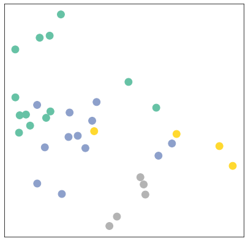
import time
model = GCN()
criterion = torch.nn.CrossEntropyLoss() # Define loss criterion.
optimizer = torch.optim.Adam(model.parameters(), lr=0.01) # Define optimizer.
def train(data):
optimizer.zero_grad() # Clear gradients.
out, h = model(data.x, data.edge_index) # Perform a single forward pass.
loss = criterion(out[data.train_mask], data.y[data.train_mask]) # Compute the loss solely based on the training nodes.
loss.backward() # Derive gradients.
optimizer.step() # Update parameters based on gradients.
return loss, h
for epoch in range(401):
loss, h = train(data)
if epoch % 10 == 0:
visualize_embedding(h, color=data.y, epoch=epoch, loss=loss)
time.sleep(0.3)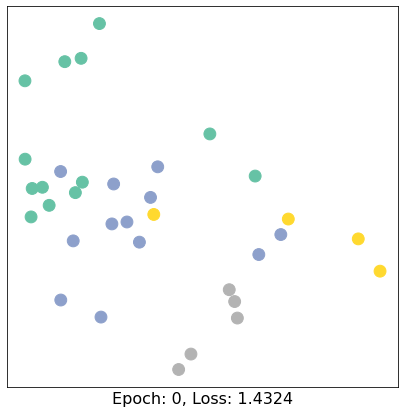
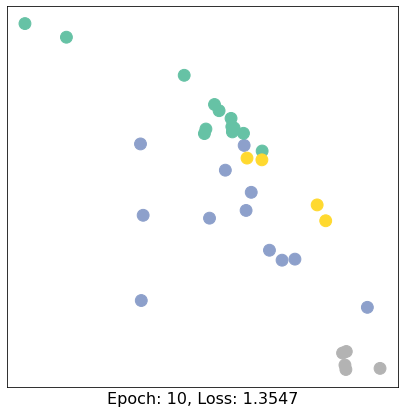
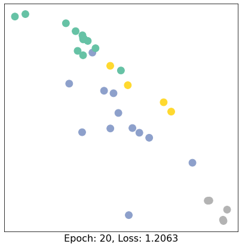
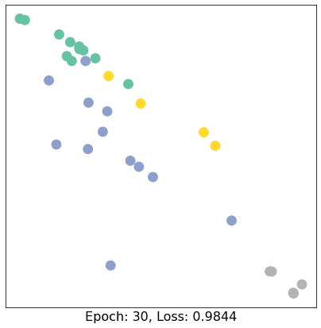
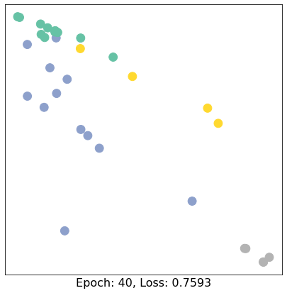
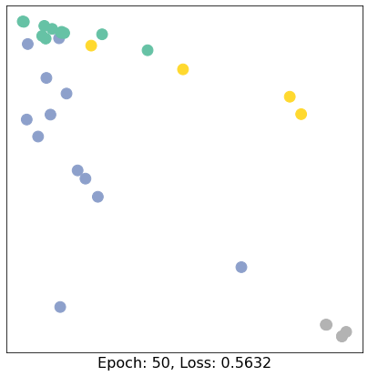
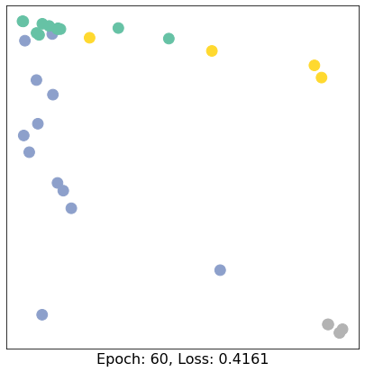
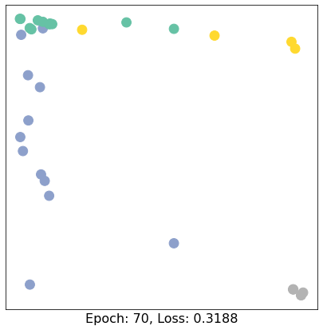
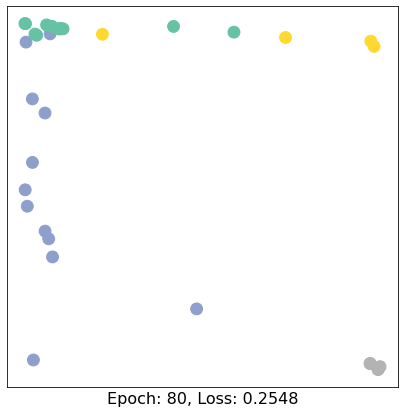
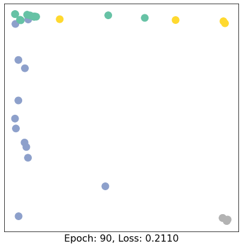
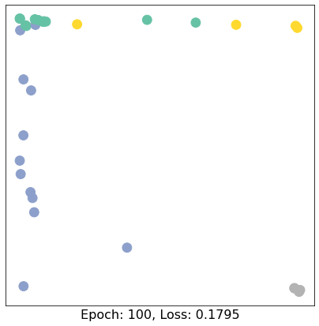
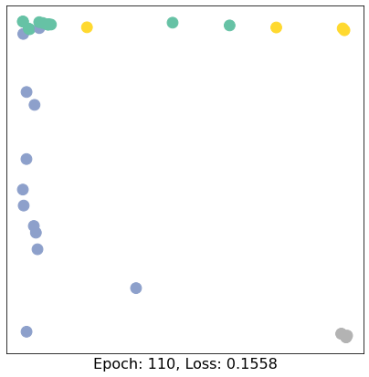
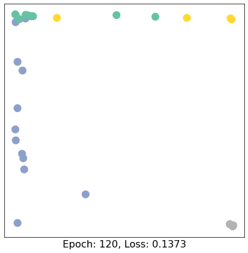
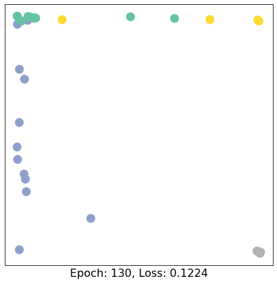
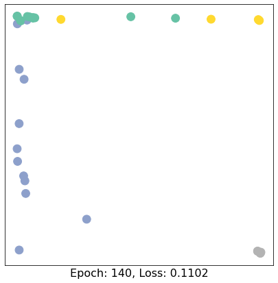
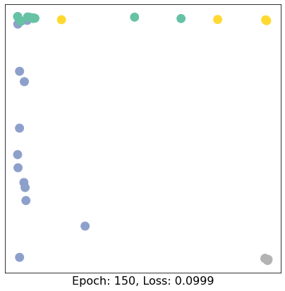
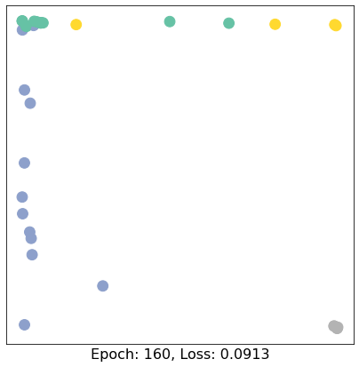
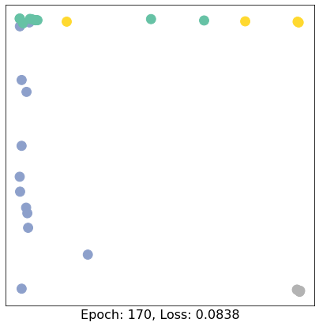
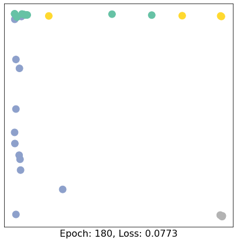
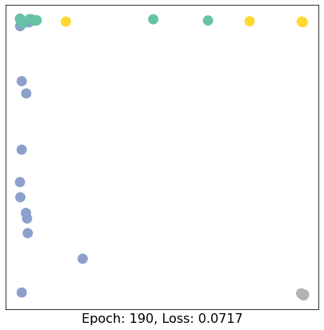
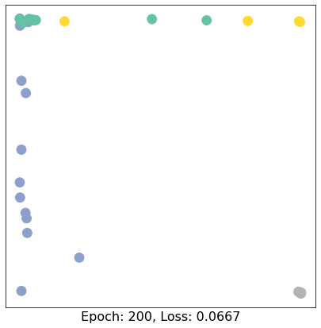
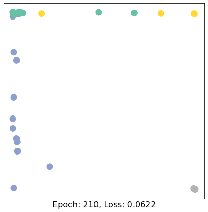
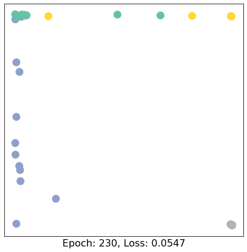
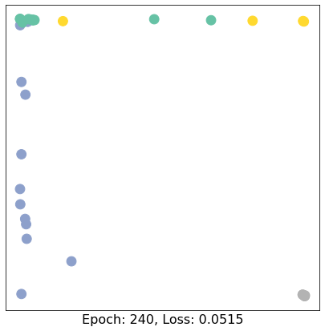
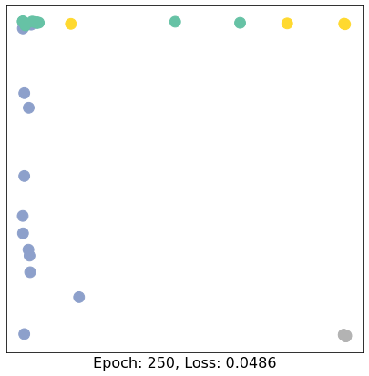
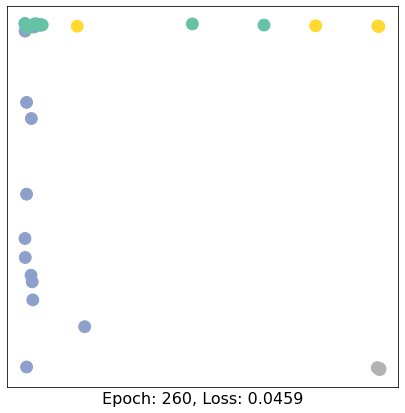
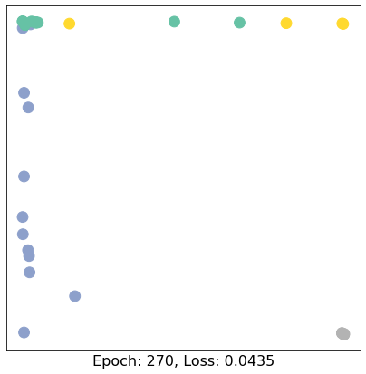
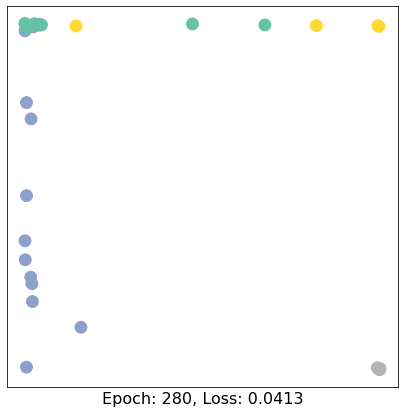
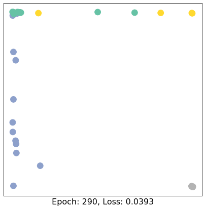
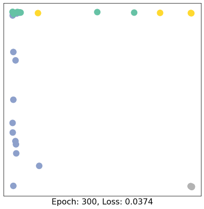
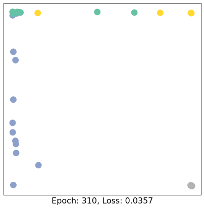
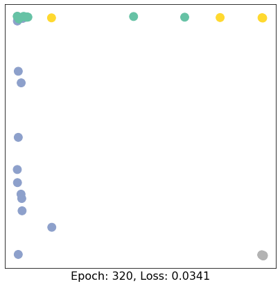
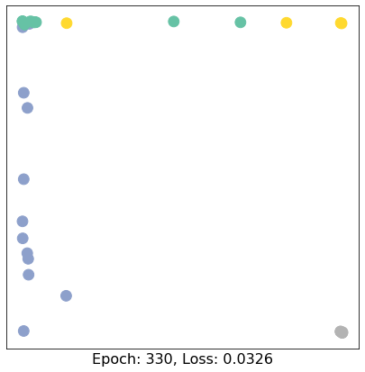
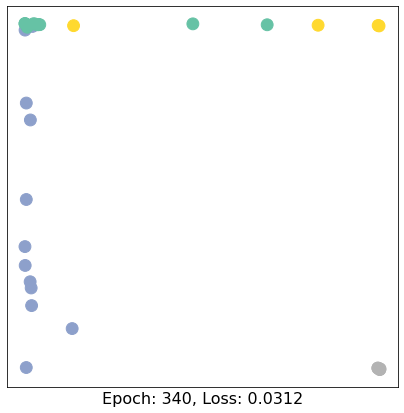
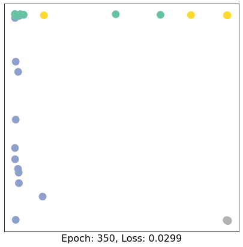
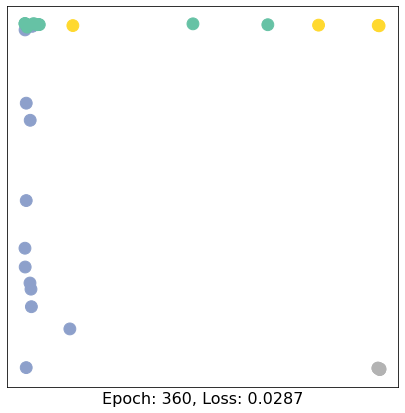
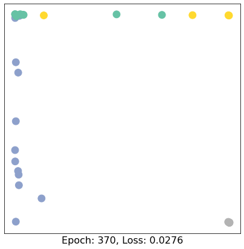
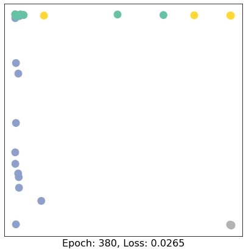
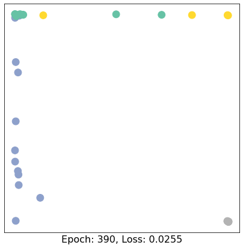
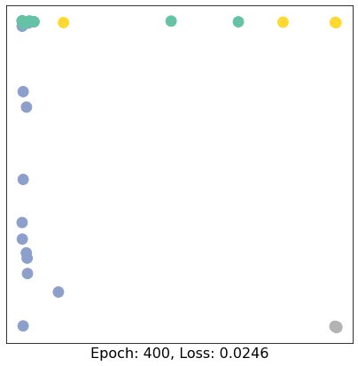
Conclusion
This concludes the first introduction into the world of GNNs and PyTorch Geometric. In the follow-up sessions, you will learn how to achieve state-of-the-art classification results on a number of real-world graph datasets.